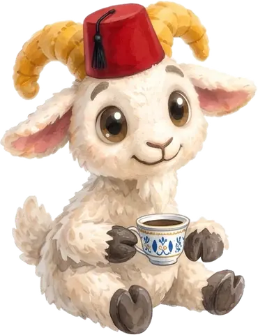
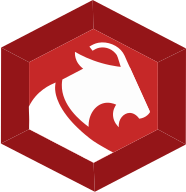
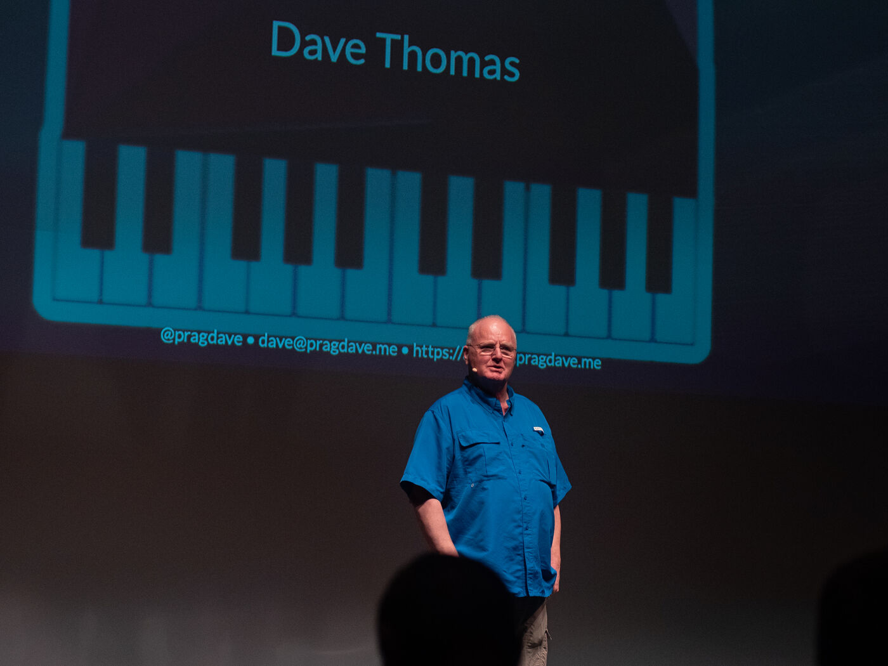
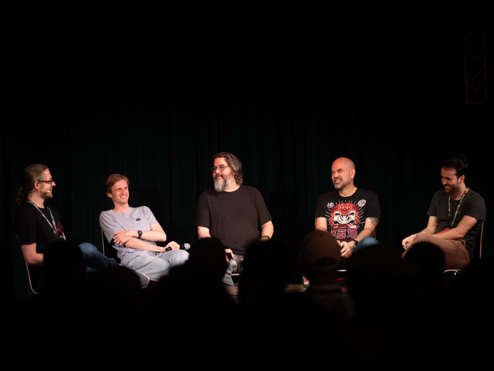
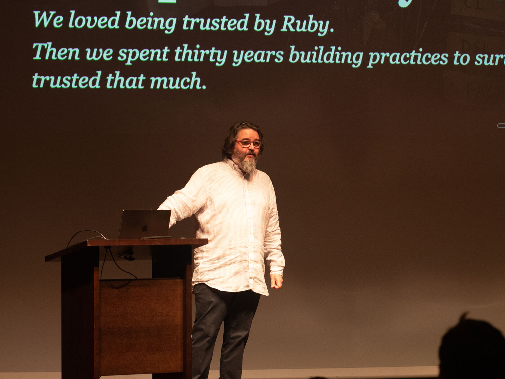
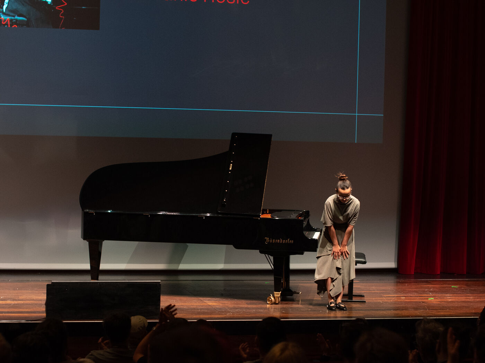

Who's organising
GoatConf is organised by Muhamed Isabegović, who founded and organised EuRuKo 2024, the first Ruby conference in Bosnia and Herzegovina, and RubyConf Austria.
IPI Academy in Tuzla is the host and partner, and gives GoatConf its rooms. The first edition expects 120 to 300 people.
- 1120 to 300people expected
- 27rooms at IPI Academy, all at once
- 32conferences organised before
- 462speakers hosted at EuRuKo 2024 and RubyConf Austria
Conferences run before
-

EuRuKo 2024 Sarajevo, 11 to 13 September 2024The first Ruby conference in Bosnia and Herzegovina. Speakers included Yukihiro "Matz" Matsumoto, José Valim, Dave Thomas, Xavier Noria, Koichi Sasada, Jean Boussier and Obie Fernandez.
2024.euruko.org -
RubyConf Austria 2026 Vienna, 29 and 30 May 2026
Two days at Haus der Musik and Das MuTh. Speakers included Chad Fowler, Dave Thomas, Obie Fernandez, Charles Oliver Nutter, Bozhidar Batsov and Andrzej Krzywda, with José Valim and Armin Ronacher on a panel.
rubyconf.at




These were past conferences, not GoatConf's program. Photos from RubyConf Austria 2026 by Alessandro Bruckheimer.